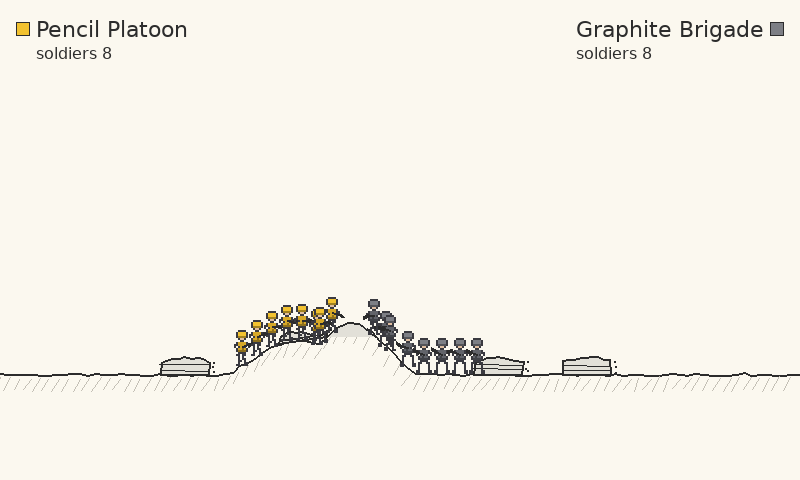
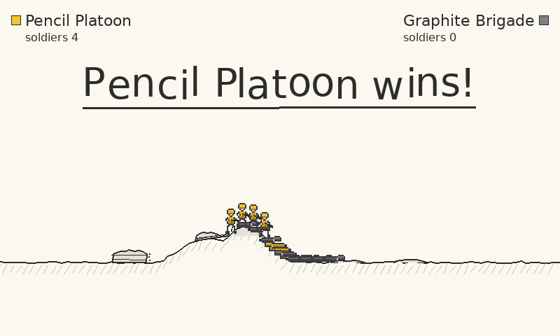
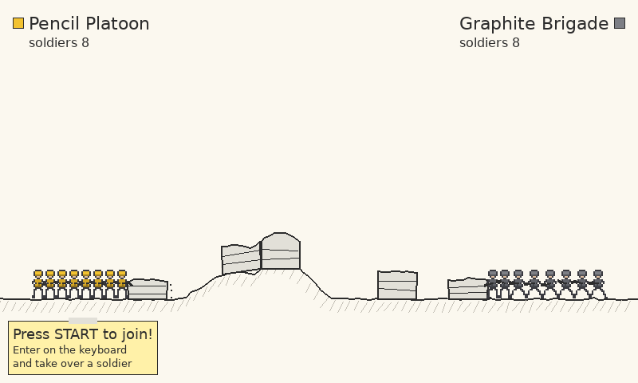
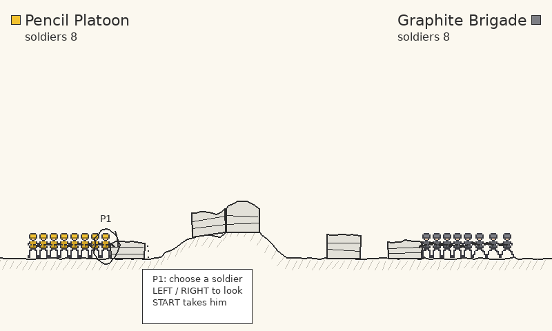
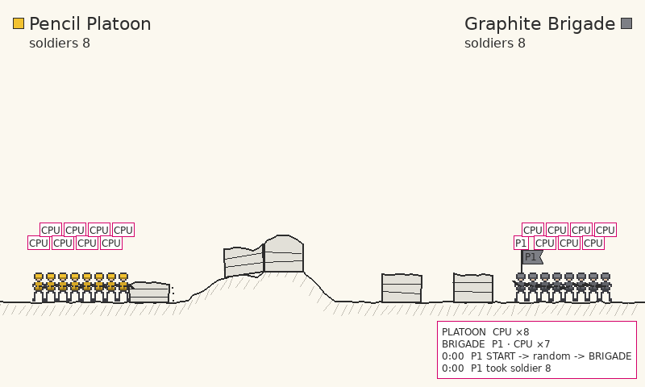
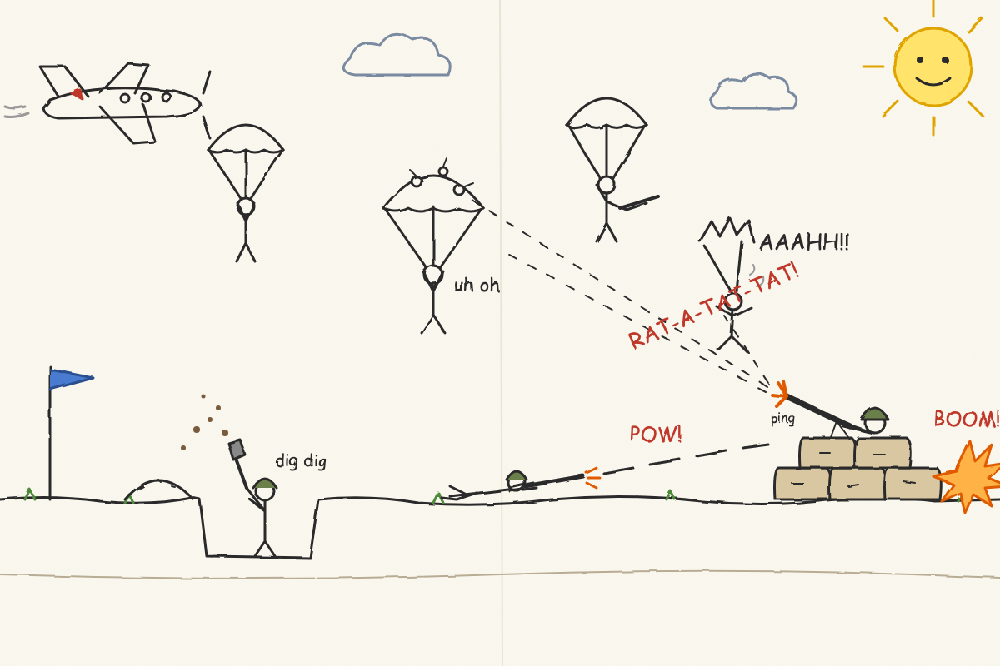
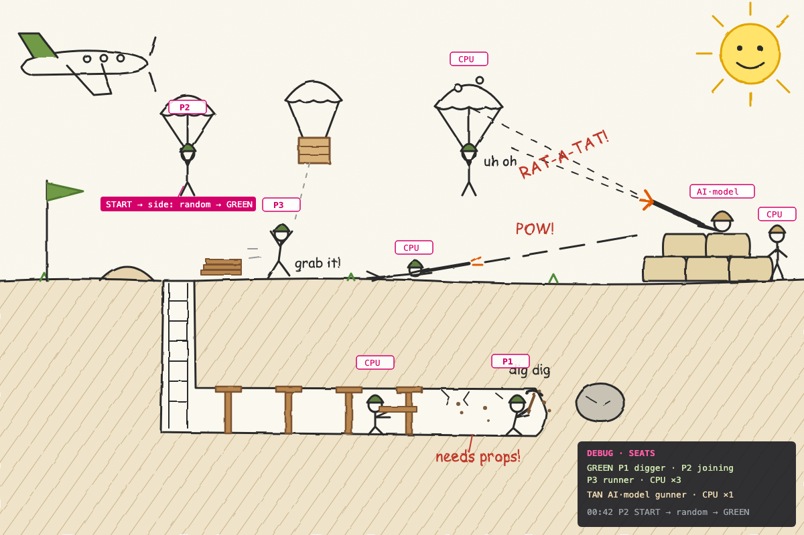
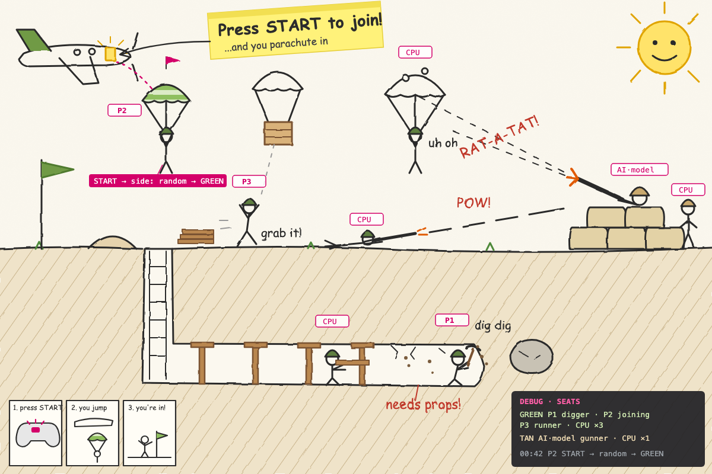
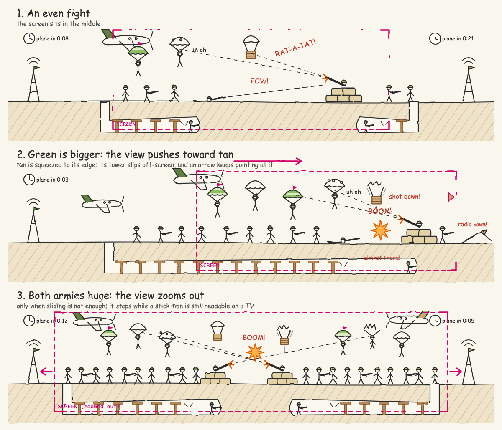
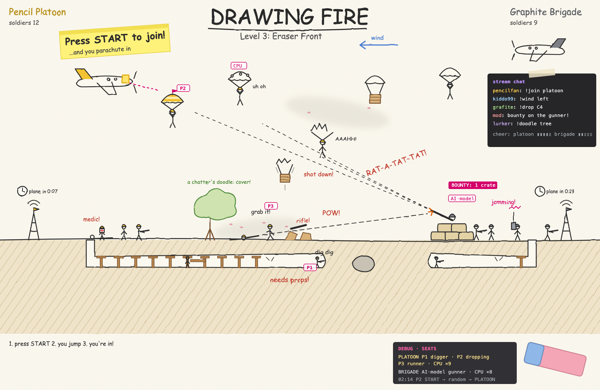

Drawing Fire Architecture#
Drawing Fire is a stick-figure battle drawn in pencil on paper, the way a child draws a war, written as one of the engine's example games. Two armies face each other across a hilly field: the Pencil Platoon in pencil yellow on the left and the Graphite Brigade in graphite grey on the right, both straight off a school pencil. The computer plays every soldier. When one army is wiped out the winner is announced on the paper (when both fall at once, nobody wins), and a new battle starts on its own. At any moment one or two local players can join: press START (Enter on the keyboard), choose a side and a soldier, and fight as him. A player whose soldier dies takes over another soldier of his side, and a player who has had enough holds Back (Escape) to leave.
Every new GlitchyGames game proves a new mechanic for the engine. Drawing Fire proves swatches: recolouring a sprite by palette swap, so one soldier sprite wears both armies' liveries (see Swatches).
This page explains how the game is built, for a developer who wants to understand it or write a
game like it. Everything here comes from src/games/drawing-fire/drawing_fire/, and the module
docstrings there are the detailed reference. The design, with the full vision and the MVP's
decisions, is plans/2026-10-25-drawing-fire-design.md. What comes after the MVP is entry 54 in
plans/future-features.md.
The game as it is#
These are screenshots of the MVP.
A battle the computer plays by itself. Each army's name, colour chip and soldier count are at the top. The ground is pencilled with hatching under it, and the sandbags are grey-washed bags:

The winner, announced on the paper before the next battle starts:

Joining. While a device has no seat, a sticky note invites it to press START (Enter on the keyboard). A player who presses it gets a card where he chooses a side (Random, Platoon or Brigade), then a soldier:

Choosing a soldier: a pencil ring highlights one of the side's computer soldiers, LEFT and RIGHT move it, and START takes him:

The debug seats view (F3): a tag over every soldier names his driver, and a panel lists each
army's drivers and the latest joins, takeovers and leaves. Its last line, held:, names the
keys and mouse buttons the game sees held this frame (from current_input()), so a key the
browser keeps from the game shows up missing while you hold it:

Where it is going: concept art#
These pictures are concept art from the brainstorm, not the game. They show the full vision:
a battlefield wider than the screen, tunnels, planes and air drops, and bigger guns. None of this
is in the MVP (see plans/future-features.md, entry 54).





Running it#
uv run drawing-fire # the console script (its member's pyproject.toml)
uv run drawing-fire --debug-overlay # start with the debug seats view (F3 toggles it)
uv run drawing-fire --random-seed 7 # another battlefield and other battles
uv run drawing-fire --record-trace run.jsonl.gz # record the session
uv run drawing-fire --replay-trace run.jsonl.gz # watch it again, exactly
uv run python -m scripts.simulate_drawing_fire --seeds 20 # headless battles: lengths and winners
nox -s browser -- drawing-fire # the browser build
main() (game.py) is GameEngine(game=DrawingFireScene).start(). The scene adds no options of
its own; all its options are the engine's. The battlefield fits the window (800x480 by default),
and --random-seed decides the terrain, the sandbags and every soldier's choices.
Controls#
The keyboard and mouse count as one device, and each game controller as another. Nothing is
bound in an ActionMap: players.py reads every control from the frame's polled input
(current_input()), the keys by scancode, so a key is its physical position on every layout.
| Input | Keyboard and mouse | Controller |
|---|---|---|
| Join (a device with no seat) | Enter or keypad Enter | Start |
| Choose a side, choose a soldier | LEFT/RIGHT: A or the left arrow, D or the right arrow; Enter takes | D-pad left/right or the left stick; Start takes |
| Move | A or the left arrow, D or the right arrow | Left stick |
| Aim | The mouse: the soldier aims from his chest at the pointer | Right stick, at any angle (the aim stays put while the stick rests) |
| Fire | Left mouse button (held: he fires whenever his pistol is ready) | Right trigger, or the right shoulder button |
| Leave | Hold Escape for a second (LEAVE_HOLD_SECONDS, timed by the frames' dt, so at 30 fps too) |
Hold Back for a second, or unplug the controller |
| Quit the game | Q (on its release) | |
| Debug seats view | F3 (the engine's debug overlay) |
W and S do nothing in the MVP (there is no jump or crouch). Escape never quits: the base Scene
quits on the release of Q or Escape, and DrawingFireScene.on_key_up_event ignores Escape's
release, because Escape is the keyboard's Back. There is no pause. Battles never stop for
anyone: players drop into and out of them, and the next one starts on its own.
Where things live#
| File | What it holds |
|---|---|
src/games/drawing-fire/drawing_fire/__init__.py |
Re-exports main (the drawing-fire console script's entry point) |
src/games/drawing-fire/drawing_fire/game.py |
DrawingFireScene (the frame: seats, drivers, the battle, the victory countdown; rendering; the debug seats view), Phase, seats_panel_lines, main |
src/games/drawing-fire/drawing_fire/battle.py |
The rules: Battle, Soldier, Sandbag, Bullet, Intent, Side, ARMY_NAMES, the events SoldierKilled and SandbagFlattened, and the tuned numbers |
src/games/drawing-fire/drawing_fire/terrain.py |
Terrain (a ground y for every x) and build_terrain (flat paper with a few seeded hills) |
src/games/drawing-fire/drawing_fire/drivers.py |
The computer driver: muster_battle (a battle and every soldier's memory and own random stream), computer_intents, computer_intent, ComputerSoldier |
src/games/drawing-fire/drawing_fire/players.py |
Player input: Device, KEYBOARD, connected_devices, device_intent (a device's input as an Intent), Button, ButtonEdges (presses, and holds in frames and seconds, per device) |
src/games/drawing-fire/drawing_fire/seats.py |
Seats: joining, choosing a side and a soldier, the takeover on death, leaving, the seat log; PlayerSeat, Stage, SideChoice, LEAVE_HOLD_SECONDS |
src/games/drawing-fire/drawing_fire/swatches.py |
Swatches, the mechanic this game proves (written to move into the engine) |
src/games/drawing-fire/drawing_fire/drawing.py |
The pencil look: wobble, the terrain, sandbags, soldiers in their liveries (ARMY_LIVERIES), bullets, the HUD and the victory banner |
src/games/drawing-fire/drawing_fire/seat_drawing.py |
The join note, the seat cards, the soldier highlight, and the debug seat tags and panel |
src/games/drawing-fire/drawing_fire/sprites/soldier.toml |
The soldier sprite (stand, walk and down), with its [swatches.livery] parts |
scripts/simulate_drawing_fire.py |
Headless computer-against-computer battles across seeds (the tuning tool) |
src/games/drawing-fire/tests/ |
The tests, one file per module, plus the simulation's and test_drawing_fire_after_the_move.py |
src/games/drawing-fire/tests/fixtures/replays/golden.jsonl.gz |
The golden replay (1,614 frames) |
scripts/record_golden_traces.py |
drawing_fire_script and DrawingFireMouse (the golden replay's player) |
scripts/record_scripted_session.py |
drawing_fire_controls (the controls tail: Q) and the command that records the fixture |
One frame#
Drawing Fire has one scene, DrawingFireScene, and one sheet of paper: the field never scrolls.
Its dt_tick(dt) does everything that decides what happens, in this order:
- Input. It reads the frame's snapshot (
current_input()), updatesButtonEdgeswith it and the frame'sdt(how many frames, and how many seconds, each device has held START, BACK, LEFT and RIGHT) and lists the connected devices (the keyboard first, then each controller by id). - Seats.
Seats.updateplays the joins, side and soldier choices and leaves (Seats). - Drivers. In a battle, the computer decides an
Intent(move, aim, fire) for every living soldier, a player's included, so the soldier's memory and random stream stay current and he is handed back cleanly. Then each playing player's device intent replaces his soldier's. - The battle.
Battle.step(dt, intents)applies every intent the same way, whoever drives the soldier: it moves soldiers (sandbags stop them), fires pistols that are ready, flies the bullets, and returns what happened. ASoldierKilledmoves a player whose soldier it was to another soldier. - The winner. When the battle is over (
Battle.over: an army is gone), the phase becomesVICTORYand the banner shows forVICTORY_SECONDS(3 s): the winner's name, or, when both armies fell in the same step (Battle.winneris None), a draw's two lines, "Nobody wins!" and "Everybody loses!" (DRAW_LINES). The bullets still in flight are cleared and nobody is drawn mid-stride, so the picture holds still. Thenstart_battle()builds the next battle: new terrain, sandbags and soldiers from fresh seeded streams, and every joined player chooses a soldier again. Seats treat a draw as they treat a win.
render(screen) draws it all from the model, straight onto the screen: the paper and ground (on
the background, pencilled once per battle and blitted whole each frame), the sandbags, the fallen and then the standing soldiers,
the bullets, the HUD, the seats' note, cards and highlight, and the banner. The soldiers are not
sprites in all_sprites.
The battle#
battle.py holds the rules and nothing else: no drawing, no input, no randomness. Each army
starts with SOLDIERS_PER_SIDE (8) soldiers spread through its fifth of the field, each with a
pistol. The numbers were tuned with the simulation (design section 4.7):
| Constant | Value | Meaning |
|---|---|---|
SOLDIER_HEALTH |
6 | Hits a soldier takes before he falls |
PISTOL_COOLDOWN |
1.5 s | Between a soldier's shots |
PISTOL_RANGE |
420 px | How far a bullet flies before it falls away (the computer fires only within it) |
BULLET_SPEED |
600 px/s | |
WALK_SPEED |
60 px/s | |
SANDBAG_HEIGHT, SANDBAG_WIDTH |
34 px, 48 px | A sandbag blocks walking while it stands |
SAND_PER_HIT |
0.25 | A sandbag loses sand per hit, sags, and is flattened at none |
MUZZLE_DISTANCE |
12 px | The muzzle is this far out from the chest; a bullet never hits a sandbag its shooter stood inside or within this distance of when he fired (his own cover: Bullet.ignored_sandbags) |
With these, 200 seeded battles end 110 to 90 for the Platoon, lasting 47 s on average, and 1,000 end 555 to 445 (53 s on average), none of them drawn. Hills block bullets, so the computer neither stands nor fires until the ground leaves a clear line to its target.
The computer driver#
drivers.py turns the battle into an Intent for one soldier, as a person reads the screen. A
soldier targets the nearest enemy (and keeps him unless another is nearer by
TARGET_SWITCH_MARGIN), advances until the enemy is within his own stand-off distance, takes
cover behind a sandbag when the enemy is in range and in sight, shoots a sandbag that blocks his
way (from SANDBAG_SHOT_DISTANCE, beyond his muzzle's reach, since his shots never hit a bag he
stands by; nearer than that he first steps back), keeps his spacing from his friends, and fires when his pistol is ready, after a reaction
delay, with an aim error held for the whole shot. A soldier crowded by a friend of higher
priority walks on to get off his spot, but never past the enemy's front: within MELEE_PIXELS
of it he steps back instead, so friends do not follow a player who walks through the enemy's
line.
All the computer's randomness (stand-off, reaction delay, aim error) comes from one random
stream per soldier (drawing_fire.soldier.<battle>.<id>), so a player taking a soldier over
never shifts anyone else's randomness, and battles replay exactly.
Seats: joining, dying and leaving#
seats.py keeps every player's seat (PlayerSeat: his name, P1 or P2, his device, his stage,
his side and soldier). It reads ButtonEdges, never pygame, and its only randomness is its own
stream, drawing_fire.seats.
stateDiagram-v2
direction LR
[*] --> ChoosingSide : START on a device with no seat
ChoosingSide --> ChoosingSide : LEFT / RIGHT cycle Random, Platoon, Brigade
ChoosingSide --> ChoosingSoldier : START (Random draws a side)
ChoosingSoldier --> ChoosingSoldier : LEFT / RIGHT move the highlight
ChoosingSoldier --> Playing : START takes the highlighted soldier
Playing --> Playing : his soldier dies, another of his side is free<br/>(drawn from the seats' stream)
Playing --> Waiting : his soldier dies, none is free
ChoosingSoldier --> Waiting : the battle is over, or no soldier is free
Waiting --> ChoosingSoldier : the next battle starts
Playing --> ChoosingSoldier : the next battle starts
ChoosingSide --> [*] : BACK held a second, or unplugged
ChoosingSoldier --> [*] : BACK held a second, or unplugged
Playing --> [*] : BACK held a second, or unplugged
Waiting --> [*] : BACK held a second, or unplugged- Each device does at most one thing a frame, so the START that opens a seat never also confirms its side.
- The highlight starts on the free soldier nearest the middle of the field, passing over a soldier another chooser of the same side is on. It stays on its soldier by id while he moves.
- A player who leaves frees his name. His soldier goes back to the computer at once, or to a waiting player of his side.
- The seat log keeps the latest eight joins, takeovers and leaves with their game time, for the
debug panel (
P1 START → PLATOON,P1 took soldier 7,P1 died → soldier 1,P1 left).
Swatches: the mechanic this game proves#
The soldier sprite is drawn once, in the Pencil Platoon's livery. Its file lists the parts that can be recoloured, beside its palette:
swatches.py reads these sets (load_swatch_sets), and a Scheme gives colours to the parts
by role (primary, secondary) or by name. recolor_surface swaps them in by exact RGB: a
part's base colour becomes the scheme's colour, and each shade keeps its brightness relative to
the base, so the helmet's shadow comes out a darker yellow for the Platoon and a darker grey for
the Brigade. RecoloredFrames builds each scheme's frames once and keeps them. The sprite file
never changes.
In the game, drawing.load_soldier_frames loads the frames with the engine's AnimatedSprite
loader, scales them up by whole pixels (so the exact colours survive), adds mirrored copies for
a soldier facing left, and draw_soldier asks for his army's livery
(ARMY_LIVERIES[soldier.side]). Nothing in swatches.py names the game: it is written to move
into src/glitchygames/sprites/. What that would take is entry 55 in plans/future-features.md.
The pencil look#
Everything is drawn with pygame primitives onto the surface it is given, from the model. A
hand-drawn line wanders by wobble(x, y, salt), a deterministic hash of where it is, never a
random stream, so the same picture is drawn every frame and in every replay. Text is rendered
once per content, fonts are made once. The colours are the paper (PAPER_COLOR), the pencil
(PENCIL_COLOR), a light hatching under the ground, and the two armies' colours: pencil yellow
(242, 194, 48) and graphite grey (125, 127, 133).
How it uses the engine#
| Engine feature | How Drawing Fire uses it |
|---|---|
Game time and dt |
Movement, cooldowns, bullets and the victory countdown use the scene's dt (capped at MAX_FRAME_SECONDS, 0.05 s, after a hitch); the seat log uses game_time |
| Random streams | Terrain, sandbags, the seats and one stream per soldier per battle, all from random_stream (seeded from --random-seed, kept in recordings) |
| Polled input | Every control is read from current_input() (keys by scancode, the mouse, controller axes and buttons), never from pygame, so a replay serves the same input |
| Sprite loading | AnimatedSprite loads the soldier's frames; swatches recolour them |
| Debug overlay | DrawingFireScene.debug_draw(surface, camera) draws the seat tags and the seats panel when the overlay is on (F3) |
| Recording and replay | --record-trace and --replay-trace work as for every game; see below |
| Browser build | nox -s browser -- drawing-fire (scripts/build_browser_bundle.py GAMES). It has no touch layout yet (exempt in tests/test_browser_touch_controls.py until its dual-stick controls settle) |
Recording, replay and the golden replay#
Everything that decides what happens runs on the frame's dt, the seeded streams and the
polled input, so a --record-trace recording replays exactly with --replay-trace.
The golden replay src/games/drawing-fire/tests/fixtures/replays/golden.jsonl.gz was recorded through the
real engine loop by scripts/record_scripted_session.py --game drawing_fire --frames 1600. The
keyboard plays the whole session (drawing_fire_script): Enter opens a seat at frame 30, the
right arrow moves the side card to the Platoon and Enter confirms it, D and A move the soldier
highlight and keypad Enter takes soldier 7 at frame 131. The player fires with the left mouse
button (held, let go, held again), the mouse following the nearest enemy (DrawingFireMouse),
walks right with D, steps back with the left arrow and A, then walks through the Brigade's line
with the right arrow and stands there. He is shot down at frame 657 and takes over soldier 1,
then dies and takes over again at frames 754 (soldier 6) and 840 (soldier 2). At frame 1232
soldier 2, the Platoon's last, falls: P1 waits, the Graphite Brigade wins, and three seconds
later the next battle starts with P1 choosing a Platoon soldier again. He holds Escape (for
LEAVE_HOLD_SECONDS and ten frames more) from frame 1500 and leaves at frame 1561. The
controls tail (drawing_fire_controls) then quits with Q. With the tail, the fixture holds 1,614
frames.
Because the game reads its controls from the polled input, which a posted event never changes in
SDL, the recorder lays the input it posted over each live snapshot (PostedPolledInput), as a
real keyboard and mouse would. It does so only for the games in POLLED_INPUT_GAMES (Drawing
Fire alone), so every other game's re-recording keeps the snapshots it had. The replay serves the
recorded snapshots.
The soldiers, bullets and sandbags are drawn, not sprites, so a replay's sprite comparison sees
none of the battle. Instead the scene posts an internal GAMEEVENT (post_event) for every
soldier killed (SOLDIER_KILLED_SUBTYPE: his id, side and driver) and every seat log entry
(SEAT_CHANGED_SUBTYPE: the change, the player, his soldier and the panel's text). The recording
holds them, and a replay in which the battle plays out differently misses one and diverges
("missing internal event"). DrawingFireScene.setup() registers its own subtypes
(DRAWING_FIRE_EVENT_SUBTYPES) with the scene manager, with a callback (_take_marker) that
does nothing: they are markers for recordings. test_the_drawing_fire_golden_replay_holds_a_death_and_a_takeover checks that
the fixture holds the player's death and takeover.
tests/replay/test_golden_replays.py checks that every control the game reads is exercised: its
keys by scancode, the mouse's motion and left button, and Q. The controller's controls are
excused (UNEXERCISED_CONTROLS, NO_GAMEPAD_IN_THE_SESSION), because the scripted session runs
on the dummy driver, which has no gamepad. Drawing Fire is in GAMES_WITHOUT_A_PAUSE, so its
replay is checked never to reach the pause screen instead of pausing and resuming.
One limit, noted in plans/future-features.md entry 54: the fixture is about 185 KB, over the
100 KB the other games keep. The first frame holds every random stream's state (19 of them,
twice), about 125 KB compressed on its own.
The pytest plugin src/glitchygames/testing/replays.py replays the fixture in a child process
(drawing-fire --replay-trace ... --headless), and the test fails unless it exits SUCCESS.
Re-record the fixture only deliberately (the commands are in the script's docstring), never just
to make a failing replay pass. A re-recording without the player's death and takeover fails the
test above.
Its package#
Drawing Fire is a package of its own beside the engine, src/games/drawing-fire/ (distribution
drawing-fire, import package drawing_fire). Its soldier sprite ships inside the package as
package data (drawing_fire/sprites/soldier.toml, read through the module's own path), so the
member's wheel and its browser archive (drawing_fire.zip) hold it. How such a package is laid
out, installed, tested and built, and how a game is moved into one, is in
Games as Their Own Packages.
Tests#
The tests use real pygame on the dummy driver; what is drawn is checked by its pixels.
| File | What it pins |
|---|---|
src/games/drawing-fire/tests/test_drawing_fire_battle.py |
Mustering, walking and sandbags, pistols and cooldowns, bullets (hills, range, no tunnelling, never the shooter's own cover), hits and deaths, sandbags losing sand, sandbag placement, the winner and a draw |
src/games/drawing-fire/tests/test_drawing_fire_terrain.py |
Seeded hills over a flat baseline, any screen width, the ground between pixels |
src/games/drawing-fire/tests/test_drawing_fire_drivers.py |
The computer driver's rules: targets, stand-offs, cover, sandbags, spacing, held aim, each soldier's own stream |
src/games/drawing-fire/tests/test_drawing_fire_players.py |
Keyboard and mouse, and controller, input as intents; dead zones; button edges |
src/games/drawing-fire/tests/test_drawing_fire_seats.py |
Joining, choosing a side and a soldier, the highlight, takeovers on death, waiting, leaving, two players |
src/games/drawing-fire/tests/test_drawing_fire_swatches.py |
Reading swatch sets and their errors, schemes, shades, recolouring, the frame cache |
src/games/drawing-fire/tests/test_drawing_fire_drawing.py |
The pencil look by its pixels: wobble, terrain, sandbags, soldiers in their liveries, bullets, HUD, banner |
src/games/drawing-fire/tests/test_drawing_fire_game.py |
The scene: battles, victory (and a draw) and the next battle, players driving soldiers, the seats drawn, the debug seats view, Escape never quitting |
src/games/drawing-fire/tests/test_drawing_fire_simulation.py |
The headless battles of python -m scripts.simulate_drawing_fire (scripts/simulate_drawing_fire.py) |